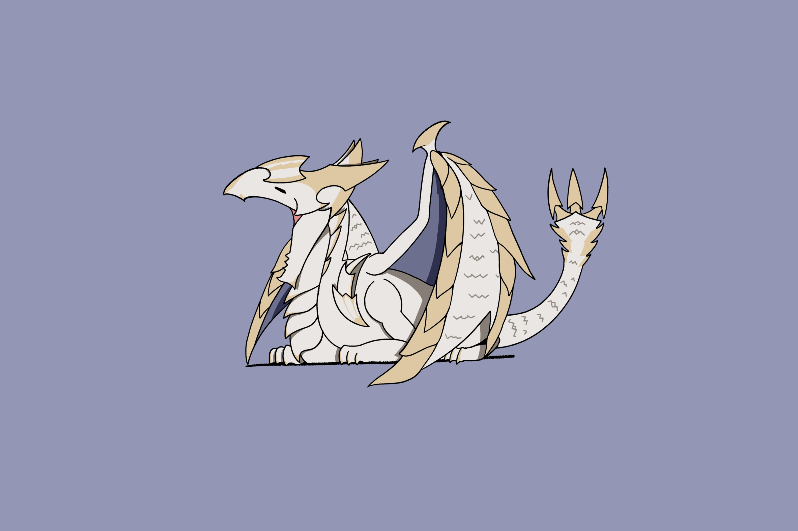

呜哇
2026-10-19
又有剪视频的想法了。可惜好多素材都没录。
才想起来我明明是个很喜欢回忆过去开心的事情又忘记去记录的人，如果过去的我在经历那些难以忘怀的事情的时候把它们记录下来，现在的我看到了一定会回复很多幸福度吧！
别人的视频都剪的好好，我什么时候才能搞出一个能让我一直回味的视频呢。
好想无忧无虑地幸福！

（Pixiv：SungiSaurs）
2026-10-21
呃啊！
2026-10-28
最想当研究生的时候就是还没当研究生的时候
做实验太费脑子了！还费显卡！（我的这台电脑还能撑多久...）
黑环的配乐确实很劲啊，最近网易云的日推也很好听，每天都在循环日推。
游戏的最高配置果然是朋友！如果没有好朋友我怎么可能会留下这么多好回忆！
好想会做视频......
好想不为未来担忧......